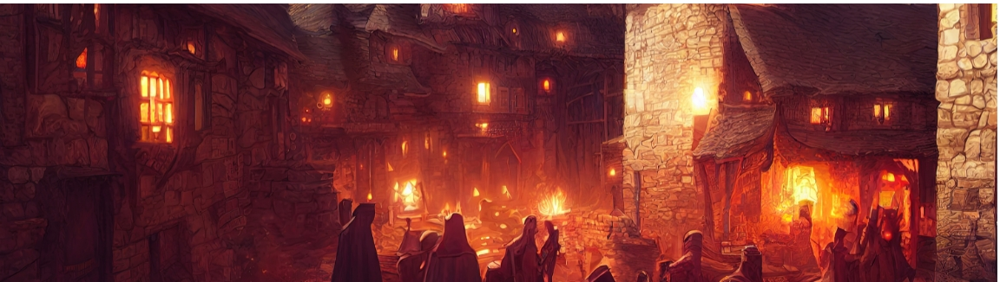

Children's Fantasy
Children's fantasy is children's literature with fantasy elements: fantasy intended for young readers.It may also mean fantasy read by children, regardless of the intended audience.
The genre has roots in folk tales such as Aesop's Fables that were not originally intended for children: before the Victorian era, fairytales were perceived as immoral and ill-suited for children's minds. A market for children's fantasy was established in Britain in the 19th century, leading to works such as Lewis Carroll's Alice in Wonderland and Edith Nesbit's Five Children series; the genre also developed in America, exemplified by L. Frank Baum's The Wonderful Wizard of Oz. Of the authors of this period, Nesbit is commonly cited as the creator of modern children's fantasy
The golden age of children's fantasy, in scholars' view, occurred in the mid-20th century when the genre was influenced by J. R. R. Tolkien's The Hobbit and C. S. Lewis's The Chronicles of Narnia. In the vein of Narnia, the post-war period saw rising stakes and manifestations of evil in the works of Susan Cooper and Alan Garner. Tolkien's Middle-earth led to mythopoeic fantasy in the 1970s, from authors such as Ursula K. Le Guin and Robin McKinley. Another influential writer of this period was Diana Wynne Jones, who wrote both medievalist and realist fantasies.
In the late 1990s, J. K. Rowling's Harry Potter led to a commercial boom in the genre, reviving older authors' careers and spawning many imitators. A concurrent success is Philip Pullman's His Dark Materials, a darker, realistic fantasy that led to a corresponding trend in a new young adult market.
Children's fantasy books and series
The protagonists are usually children or teens who have unique abilities, gifts, possessions or even allies that allow them to face powerful adversaries. Harry Potter is a powerful young wizard, one of the children of The Dark Is Rising series is an immature Old One with magical abilities, and in the His Dark Materials series the children have magical items and animal allies. The plot frequently incorporates a bildungsroman.
In the earlier part of the 20th century, C. S. Lewis noted that fantasy was more accepted in juvenile literature, and therefore a writer interested in fantasy often wrote in it to find an audience.